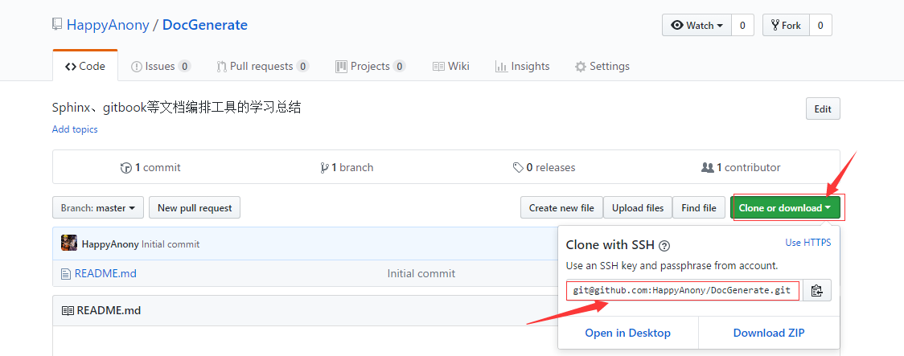
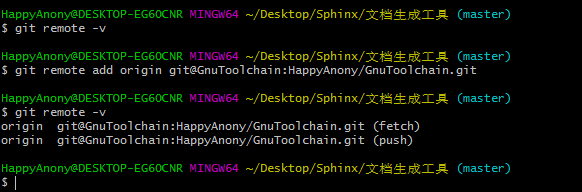
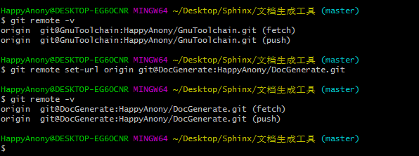
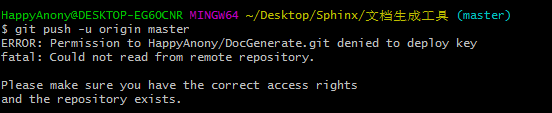
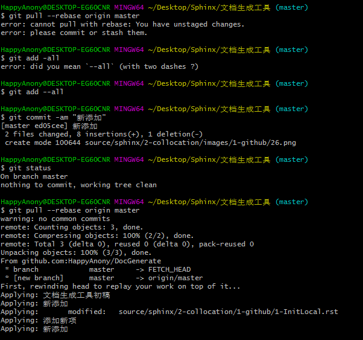
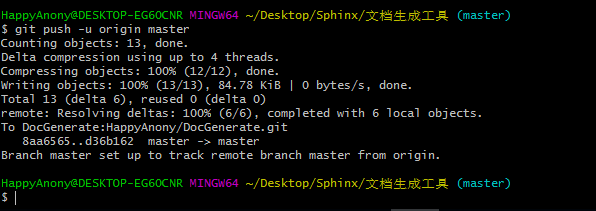

远程仓库部署¶
参考文档
配置remote url¶
- 可使用
git remote -v命令查看当前配置的remote仓库 - 点击github仓库页面的
clone and download;然后点击Use SSH，找到ssh的clone地址，复制该地址

- 如果
git remote -v命令结果为空，则使用git remote add origin <url>命令将刚才复制的remote ssh url新添加到git中 origin为remote远程仓库的默认名称- 注意url中的
github.com需替换成config文件中Host别名DocGenerate或GnuToolchain
- 如果

- 如果
git remote -v命令结果不为空，则使用git remote set-url origin <url>命令将remote url重置成刚才复制的remote ssh url - 注意url中的
github.com需替换成config文件中Host别名DocGenerate或GnuToolchain
- 注意url中的
- 如果

- 使用
git push -u origin master命令将本地仓库push同步到刚才配置的remote远程仓库中

- 此时可能会报错误
fatal: Could not read from remote repository.，出现错误的主要原因是github中的README.md文件不在本地代码目录中，可使用git pull --rebase origin master命令解决 - 此时需要确保当前working暂存区的所有文件都已经commit提交到本地仓库中
- 该项也提醒我们以后凡是
git push之前最后先使用git pull将remote远程仓库内容拉到本地和本地仓库合并，然后再push到远程仓库，避免push时出现错误
- 此时可能会报错误

- 然后使用
git push -u origin master命令再次将本地仓库push同步到刚才配置的remote远程仓库中，此时就会push成功
